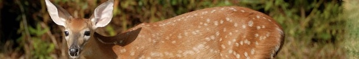

S/O/R/R/Y/ F/O/R/ T/H/E/ W/A/I/T/
üëπ ARTSTUFF.WTF

FRI 6/8
Frau Fiber vs the Machines
Human Resources
12pm - 6pm (through Sunday)
FREE
The works in this exhibition document Frau Fiber’s on-going battle with contemporary apparel manufacturing. In video, photography and artifacts, the exhibition makes space to witness Frau Fiber’s attempt to spin yarn, knit a tube sock and knit a sweater as fast as a machine. This series of textile productions are inspired by the folk lore of the ultimate working-class hero: John Henry. Henry, who was immortalized in verse and myth in the 1800’s, fought and lost a valiant battle against the drill machine that took his life and ultimately replaced the jobs of tireless railroad workers. The exhibition is curated by Frau Fiber’s archivist and biographer, Carole Frances Lung. Frau Fiber is a textile super-hero who uses pedagogical, material and playful approaches to teach communities about the human cost of mass production and consumption. Many of her spirited durational performances and other projects take place at Frau Fiber’s store-front headquarters in downtown Long Beach, CA, called the Institute for Labor Generosity Workers and Uniforms(ILGWU). Her legacy project is the Sewing Rebellion, a national campaign to “STOP SHOPPING AND START SEWING!”. The Rebellion is a grass roots movement that empowers people through skill-sharing, facilitates community building, and advocates for social change.
LINK

SAT 6/9
Intro to Abolition: Workshop
Youth Justice Coalition
1pm - 3pm
FREE
Critical Resistance Los Angeles will be hosting a 101 workshop on Prison Industrial Complex Abolition as we look to welcome new members into our chapter and build the movement for the abolition of the Prison Industrial Complex!For the second part of our introductory workshop series, learn about abolitionist thinking and practice! We will be working through tough scenarios where we practice abolitionist interventions. Further your practice in confronting the PIC and work with others as we ask the tough questions about how to enact abolitionist tactics in everyday life. This workshop will be a great session to come to if you're looking for some more info on CRLA, the jail fight, abolition and/or are interested in joining Critical Resistance. This workshop also functions as the second half of our New Member Orientation.
LINK
F for Un: An Evening of Experimental Art and Music
Bob Baker Marionette Theater
7pm
$15
The night will open with a performance by Bob Baker's Marionettes followed by F’s improvisational noise performance. This all ages event will feature marionettes, colorful projections, and special surprises. Also at the theater will be a one-night-only exhibition and reception featuring artworks by the members of F inspired by Bob Baker's legacy. If you've never been to the Bob Baker’s Marionette Theater to see the amazing things they do, this is an incredible chance to see this historical Los Angeles landmark! F is a Los Angeles art-rock supergroup whose motto is "Simplicity Through Noise" and who have developed a practice rooted in improvisational ensemble playing using electric guitars (played with rubber mallets and other extended as well as traditional techniques), percussion, and vintage synthesizers, in various combinations. F are Marnie Weber, Doug Harvey, Daniel Hawkins, and Kane Lafia.
LINK
A FEW SMALL ACTS OF REVOLUTION: FILMS BY NICK MACDONALD
Echo Park Film Center
7:30pm
$5
Nick Macdonald made seven political, essay films from 1970 to 1975. These films have been shown at the Museum of Modern Art (MoMA), Whitney Museum of American Art, Brooklyn Academy of Music, and various university and leftist forums. Made on extremely low budgets with a homemade quality to them, his films don’t rely on documentary footage but, instead, use photographs and guerrilla skits, often taking place within his apartment. In 2015, MoMA accepted all his films for their archives and they are currently being processed by the museum.
LINK
THE LANGUAGE OF COMMUNICATION: THE GREY DOMAIN BY BRIANA GONZALES
Coaxial
8pm
FREE
In Residency with COAXIAL, Briana Gonzales, will feature an installation where movement, sound, and the obstruction of light form the language of communication. Featuring vocalist Daniel Leland Crook and Dancers Kenzie McClure and Tyy Wells in a world where patience at different frequencies is its common rule. A world of understanding the exchange in the environment between Mother Earth and its breath around it. Connectivity through pieces, accepting the uncomfortable and indulging in the negative space that is the human psyche that people void in their societal realities but exist in each person's vulnerability.
LINK

SUN 6/10
Sound Market w/ Alex Ho, Max Ellington, Luke Mele
ETA Highland Park
1pm - 5pm
FREE
Kicking off a brand new Sunday afternoon hang in HP! — w/ sounds by: Alex Ho, Max Ellington, Luke Mele
LINK

ABOUT
ARTSTUFF.WTF is a minimal website listing page for selected mostly DIY art (and etc) events going on around Los Angeles. It is a personal list of 5 - 10 events sent out to friends weekly, and made available online here for bookmarking and quick reference. There is an archive of past listings. Sign up to receive weekly emails. Made by Lee Tusman.